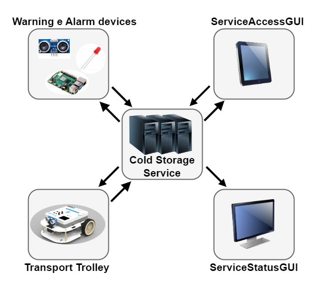

Introduction
Lo Sprin43 è il naturale proseguo di quanto realizzato nello Sprint2.Requirements
Descrizione del
TemaFinale23
Goals Sprint 4
Si possono definire in seguito i goal relativi allo Sprint4:
- Identificare ed analizzare tutti i problemi relativi ai requisiti che coinvolgono la ServiceStatusGUI
- Integrare al sistema realizzato nello Sprint3 la ServiceStatusGUI
- Realizzare l'interfaccia grafica
- Testare il sistema
Requirement analysis
Chiarimenti del committente
L'interazione con il committente ha permesso di chiarire alcuni aspetti del progetto:Sistema
Questo ultimo Sprint ha come prodotto finale il sistema identificato dallo Sprint0. Nella seguente foto vengono riportati i macro-componenti del sistema complessivo::

Analisi
Dai requisiti espressi nel Tema Finale e dalle analisi già effettuate negli Sprint0, Sprint1, Sprint2 e Sprint3, in questo Sprint occorre analizzare la ServiceStatusGUI che è definita come interfaccia utile per mostrare all'addetto della supervisione, detto Service Manager, i dati utili per monitorare il sistema.Ai fini di sorveglianza si ritengono valide mostrare le seguenti informazioni:
- Peso fisico corrente effettivamente presente nella ColdRoom
- Peso prenotato ma non ancora presente nella ColdRoom
- La posizione del TransportTrolley sulla mappa
- Lo stato del TransportTrolley
- Numero di richieste di store rifiutate dall'avvio del sistema
Analisi del Problema
Per la comunicazione delle informazioni che descrivono lo stato del nostro sistema si adotta il pattern Observer.Tutti i dati che vengono comunicati permettono di informare il Service Manager in modo completo dello stato del sistema, tranne per quanto riguarda la posizione in tempo reale del transportrolley. Questo succede perchè non avendo accesso diretto all'attore robotpos presente all'interno del basicrobot23 offerto dal committente le uniche informazioni che si riescono a raccogliere sono le posizioni del TransportTrolley sulla mappa solo all'inizio e alla fine di una mossa moverobot(coordinate).
Esposti questi fatti si può agire in due modi differenti:
- Essere soddisfatti di questo livello di precisione e mostrare in modo accurato la posizione del TransportTrolley> quando questo è fermo, ma qualora si trovi in movimento ci si limita a comunicare la partenza e la destinazione, potenzialmente con l'aggiunta di una notifica ogni volta che questo effettua uno step.
- [Solo se si riesce ad ottenere il plan prima di fare doplan]Sapendo il percorso da effettuare grazie al planner, e conoscendo quando il TransportTrolley effettua uno step, si potrebbe ricostruire la sua posizione in coordinate sulla mappa.
- Se si può modificare il basicrobot23: si aggiungerebbe al Qak relativo le updateResources quando viene fatta ogni mossa
- Se non si può toccare il basicrobot23 e quindi svolgere il punto 2 si richiederebbe lavoro extra di TOT GIORNI
Il TransportTrolley si può trovare in tre stati diversi:
- In HOME
- In movimento
- Fermo
Interazioni
Data la sua natura, tutte le interazioni hanno come destinatario ServiceStatusGUI. In particolare i seguenti messaggi sono prodotti grazie al pattern Observer, per questo motivo possiedono tutti lo stesso nome "coapUpdate":| Messaggio | Mittente | Destinatario | Semantica messaggio | Descrizione |
|---|---|---|---|---|
| coapUpdate | transportrolley | ServiceStatusGUI | Dispatch | Informa la ServiceStatusGUI dello stato del TransportTrolley |
| coapUpdate | basicrobot23 | ServiceStatusGUI | Dispatch | Informa la ServiceStatusGUI della posizione del TransportTrolley sulla mappa |
| coapUpdate | ColdStorageService | ServiceStatusGUI | Dispatch | Informa la ServiceStatusGUI del peso fisico presente all'interno della ColdRoom |
| coapUpdate | ColdStorageService | ServiceStatusGUI | Dispatch | Informa la ServiceStatusGUI del peso prenotato ma ancora non presente nella ColdRoom |
| coapUpdate | ColdStorageService | ServiceStatusGUI | Dispatch | Informa la ServiceStatusGUI della quantità di richieste di storage rifiutate dall'avvio del sistema |
Architettura logica
Codice QAK per la modellazione del sistema: SonarLed.qak
Il sistema da noi modellato presenta la seguente architettura logica:

Test plans
| Test | Entità coinvolte | Scenario | Comportamento atteso |
|---|---|---|---|
| TestAlarm | ServiceStatusGUI | Il sonar rileva una distanza minore di DLIMT e viene scatenato l'evento alarm per fermare il TransportTrolley | La ServiceStatusGUI mostra che il robot si è fermato |
| TestRquestStorage | ServiceStatusGUI | Viene effettuata una richiesta di storage | Il peso prenotato si aggiorna di una quantità pari a quella della storerequest |
| TestInsertTicket | ServiceStatusGUI | Viene effettuata una richiesta isolata di insertticket | Ci si aspetta che il robot giunga alla posizione di INDOOR, direzionarsi po alla PORT, aggiornare sia il peso prenotato che quello fisico, ed infine dirigersi verso alla HOME |
| TestRefusedRequest | ServiceStatusGUI | La ColdRoom si trova con lo spazio esaurito ed una richiesta di storage viene effettuata | Il contatore di richieste di storage rifiutate deve essere incrementato di 1 |
Project
Conclusioni
Gli output dello sprint3 sono:
- ServiceStatusGUI
By
Tassinari Gabriele, email: gabriele.tassinari2@studio.unibo.it
Baraldi Leonardo, email: leonardo.baraldi@studio.unibo.it
Koss Krystian, email: krystian.koss@studio.unibo.it


GIT repo: https://github.com/4utotune/ColdStorageService/
Tassinari Gabriele, email: gabriele.tassinari2@studio.unibo.it
Baraldi Leonardo, email: leonardo.baraldi@studio.unibo.it
Koss Krystian, email: krystian.koss@studio.unibo.it
GIT repo: https://github.com/4utotune/ColdStorageService/